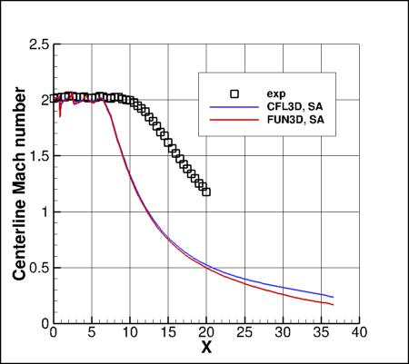
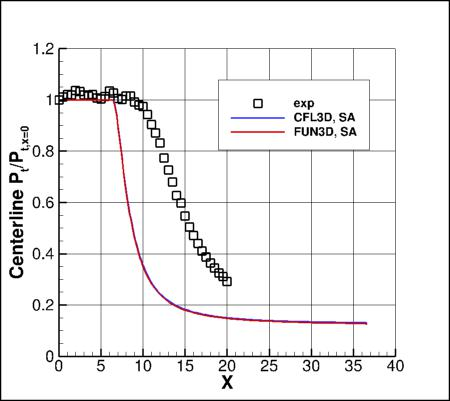
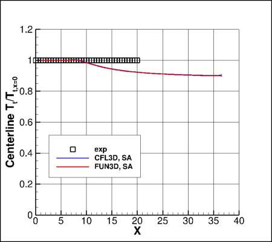

Public Access (formerly Langley Research Center)Turbulence Modeling Resource |
Return to: Axisymmetric Cold Supersonic Jet Case Intro Page
Return to: Turbulence Modeling Resource Home Page
Axisymmetric Cold Supersonic Jet Validation Case
SA Model Results
Link to SA equations



Note that thorough
grid studies were not performed for validation cases such as this one.
Some effort was made to ensure reasonable grid resolutions, but there may still be
small noticeable discretization errors. Therefore, these validation results shown should be considered
representative, but not "truth."
The plots shown compare the SA results from two independent
CFD codes: CFL3D and FUN3D, along with experimental data.
Both codes used freestream value of the SA turbulence field variable (relative to laminar)=3.
Please read note 5 on Notes on running CFD page.
These results are from the finest grid (481x161; 81x121; 401x345).
Both codes gave fairly close results to each other, which were significantly different from experiment.
No specific turbulence model compressibility corrections have been employed.
Return to: Axisymmetric Cold Supersonic Jet Case Intro Page Return to: Turbulence Modeling Resource Home Page
Page Curators: Christopher Rumsey,
Ethan Vogel,
Clark Pederson
Last Updated: 02/21/2018